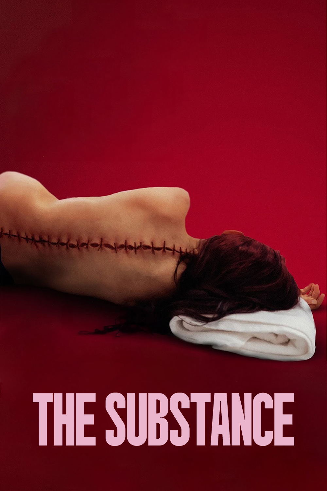

A SUBSTÂNCIA

"A Substância" é um filme de 2024, do gênero terror corporal, escrito e dirigido por Coralie Fargeat e estrelado por Demi Moore, Margaret Qualley e Dennis Quaid. O filme acompanha uma celebridade em declínio que decide usar uma droga do mercado negro, uma substância replicadora de células que cria temporariamente uma versão mais jovem e melhor de si mesma, causando efeitos inesperados.
Wikipedia IMDb